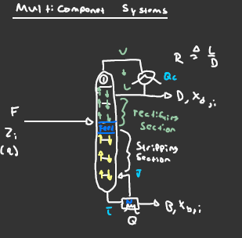

Multi-component Distillation: Tray composition and Shortcuts

Multi-Component system diagram
Multi-Component Column we have a total condenser and located at the bottom is a reboiler for the system.
Shorcut for Multicomponent Distillation Systems
F,U,G,K Shortcut (Oddly close to another word...)
U, Underwood - Solves for Rmin
G, Gilliland - (Nmin, Rmin) Via correlation -> N,R practical
K, Kirkbride - Nr/Ns {Feed Stage}
Fenske Eq.

Underwood Eq.

Gilliland Correlation